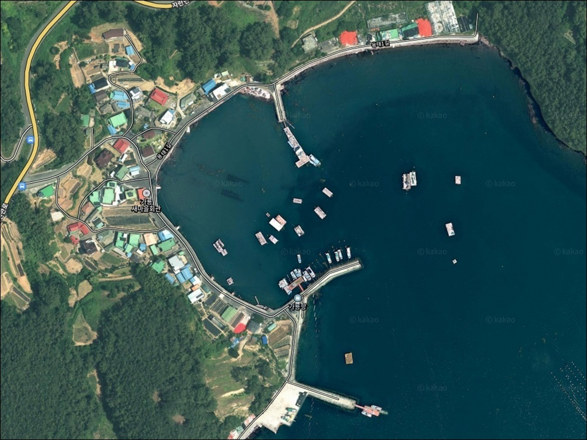
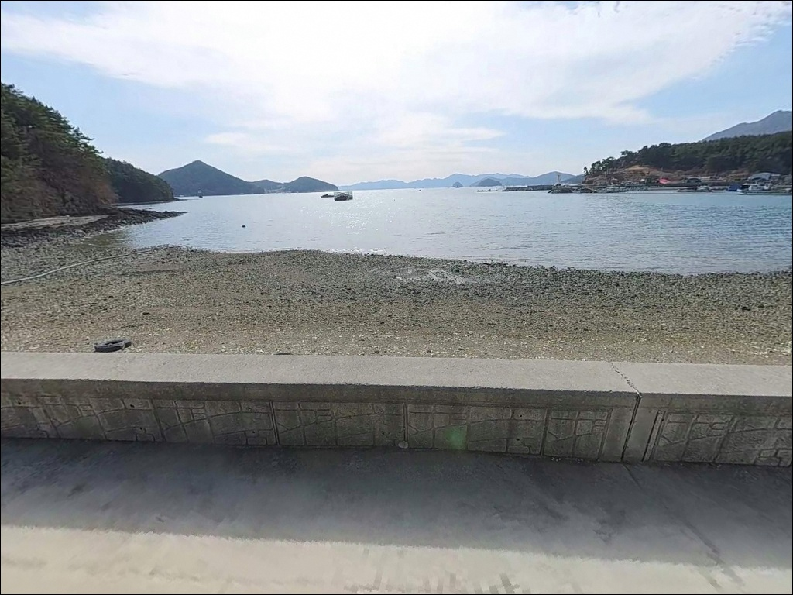
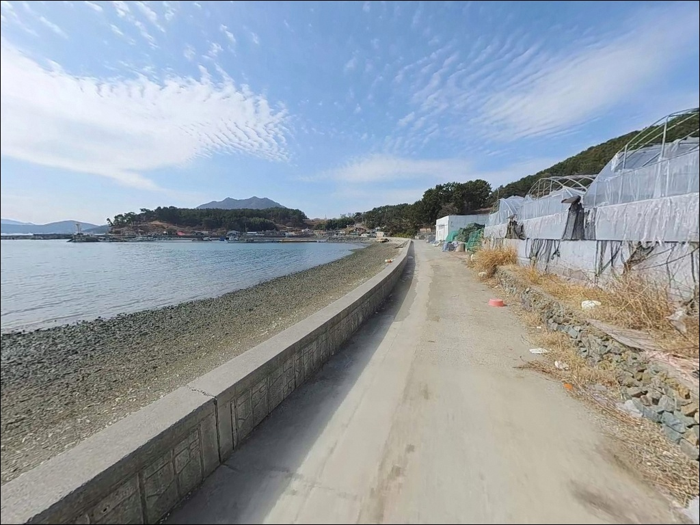
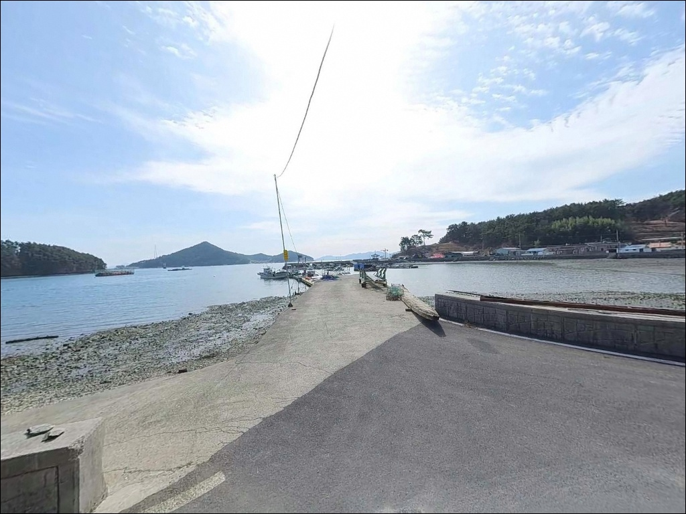
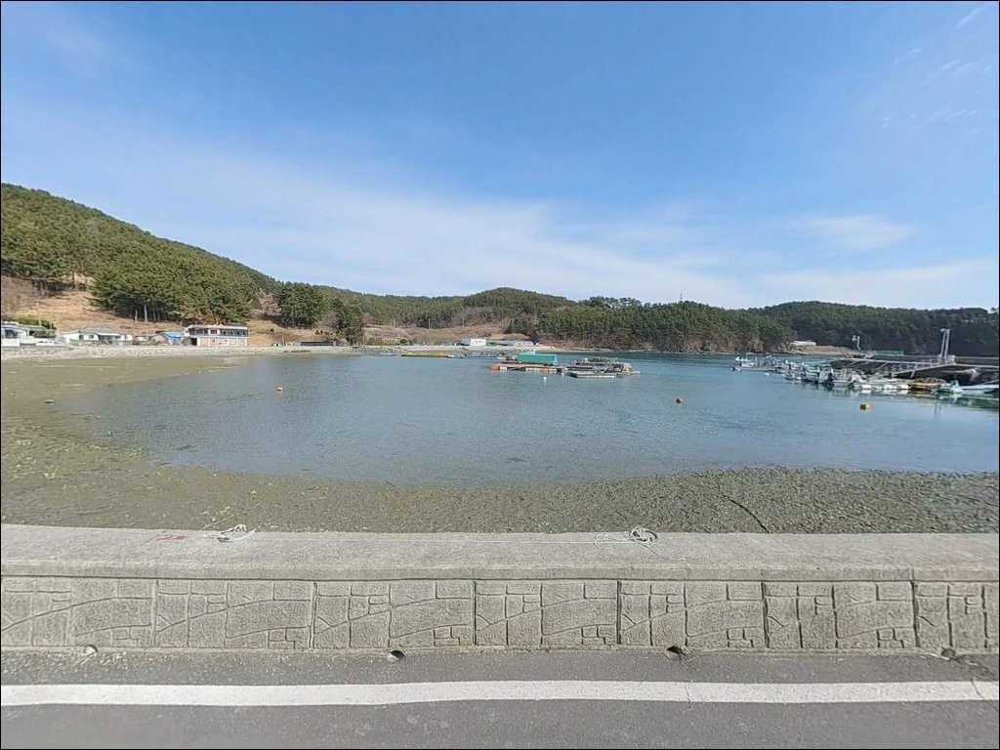
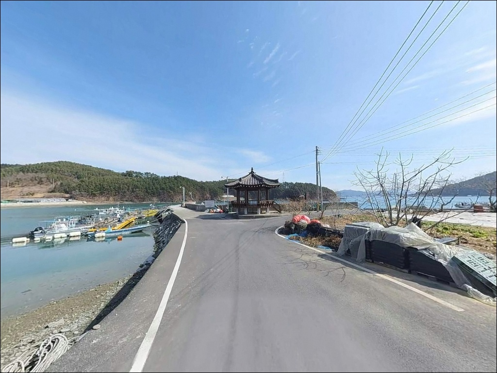
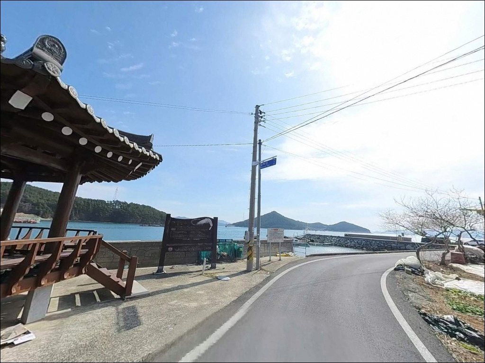
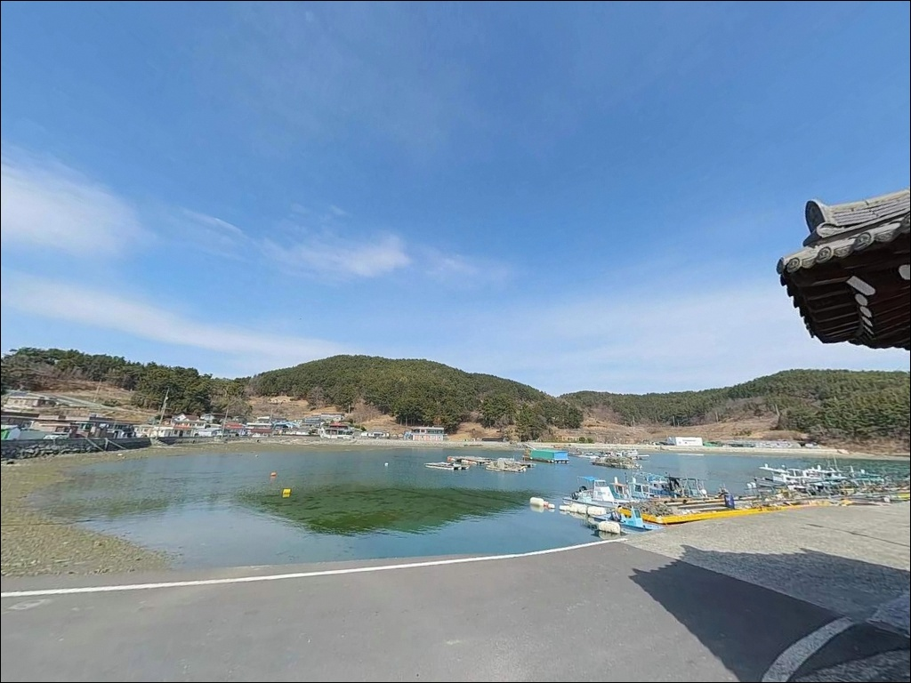
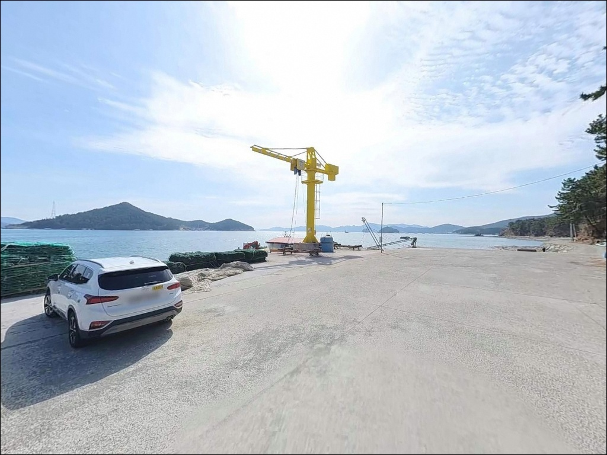

조류 멈추면 원투로 바꾼다, 고성 가룡항 선착장 끝단 6m 수심
이 페이지에는 광고(제휴 링크 포함)가 있으며, 광고 링크를 통해 구매하면 운영자가 판매 수익 또는 수수료를 받을 수 있습니다. 포인트 사진: 카카오맵 스카이뷰·로드뷰. 이 페이지의 지도·사진 이미지는 카카오맵의 실제 서비스 이미지와 다를 수 있습니다.


포인트 안내
가룡항
경남 고성군 하일면 용태리 700-3
자란만 내측 포인트에서 가장 많이 놓치는 판단은
물때 계산 없이 무작정 진입하는 것입니다.
내만권이라 파도가 잔잔해도
조류가 멈춘 시간대와 움직이는 시간대의
낚시 여건 차이는 분명히 존재합니다.
이 글은 가룡항의 진입 환경, 지형 구조,
낚시 방식별 공략 조건을 중심으로 정리합니다.
가룡항은 2002년 어촌정주어항으로 지정된
고성군 하일면 용태리의 소형 어항입니다.
호안 182m, 선착장 236m 규모로
두 개의 선착장이 내항을 감싸는 구조를 이루고 있습니다.
자란만 내측에 깊숙이 위치해
외해 파도의 직접 영향을 받지 않는
반폐쇄형 해역에 해당합니다.
이 글은 가룡항의 낚시 여건과
진입 환경, 차박 체류 조건에 집중합니다.
조황 단정이나 특정 어종 보장은
이 글의 범위에 포함되지 않습니다.

1. 진입 동선과 포인트 접근성
가룡항 진입은 77번 국도에서
하일면 용태리 방면으로 빠지는
마을 안길을 경유합니다.
선착장 입구까지 포장도로가 연결되며,
급경사 구간은 없는 편입니다.
왕복 교행이 가능한 구간이 이어지다가
항구 진입부에서 도로 폭이
좁아지는 구간이 포함되어 있습니다.
어촌정주어항 육역으로 지정된 구간 내에
차량 회차 공간이 확보되어 있습니다.
소형 어항 특성상 어선 하역 동선이
먼저이므로, 접안면을 막지 않는
자리에 차를 세우는 것이 기본 원칙입니다.
대형 SUV나 캠핑카는
출발 전 위성지도로 진입로 폭을 확인하고
가는 편이 안전합니다.
주차는 선착장 진입부 어항 광장 평탄지를
1순위로 활용합니다.
소형 어항 규모에서 2~4대 이상
주차 가능한 공간이 형성되며,
낚시 자리와 차량 거리가 가까워
짐 운반이 편리한 구조입니다.

2. 차박 환경과 야간 체류 여건
가룡마을은 민가 밀집도가 낮은
소규모 어촌 취락입니다.
야간에는 차량 통행이 거의 없고
프라이버시 확보 측면에서는
불편하지 않은 수준입니다.
어항 관련 조명이 선착장 구역을 밝히고 있어
완전한 암흑 환경은 아닙니다.
자란만 내측 포인트 특성상
외해에서 오는 파랑과 강풍의
직접 영향이 약한 편입니다.
파도 소음보다는 어선 계류 환경 특유의
잔잔한 분위기가 유지되는 곳입니다.
낚시를 마친 뒤 단기 대기 목적의 차박으로는
나쁘지 않은 여건입니다.
다만 주차 가능 대수가 제한적이므로
주말 선점 여부를 감안해 움직이는 편이 좋습니다.
야간에는 개인 조명 장비를 반드시 지참합니다.
선착장 끝단은 난간이 없는 콘크리트 직벽 구조로
야간 이동 시 발밑 확인이 필요합니다.
구명조끼는 선착장 진입 전 착용하는 것이
기본 안전 수칙입니다.


3. 주변 편의시설 및 인프라 현황
가룡항 반경 3km 이내에는
편의점 프랜차이즈나 주유소를
기대하기 어렵습니다.
하일면 소재지 방향으로
약 8~10km 이동하면
소형 마트와 식당이 있으며,
완전 자급 체제로 진입하는 것이
현실적인 준비 방식입니다.
응급 상황 발생 시
삼천포 시가지(사천시)까지 약 15~18km,
고성읍까지 약 15~20km 거리입니다.
출발 전 연료·식수·비상약품을
충분히 갖춰두는 것이
이 포인트 방문의 기본 준비입니다.
가룡항은 어촌정주어항으로 지정되어
고성군이 기본 항만 시설을 관리합니다.
공식 화장실 여부는 확인되지 않으므로
출발 전 개인 위생 대비를 갖춰두는 편이 좋습니다.

4. 진입 전 반드시 챙겨야 할 준비사항
가룡항은 자란만 내만권에 위치해
물때 영향이 조과를 가르는 포인트입니다.
내만권이라 파도는 잔잔하더라도
정조 전후 타이밍에 활성도가 오르는 패턴이 있습니다.
출조 전 바다타임에서 하일면 기준 물때를 확인하고
물돌이 시점 전후로 입장 시각을 맞추는 것이
이 포인트 공략의 핵심입니다.
자란만 일대는 굴 양식장이 산재해 있어
어선 조업이 잦은 해역입니다.
선박 접안용 비트는 낚싯대 거치대로
사용하지 않으며,
어선 하역 동선에서는
자리를 피하는 것이 기본 매너입니다.
낚시 쓰레기는 전량 수거해 귀가합니다.
선착장 외측 바닥은 만조 시 미끄러울 수 있습니다.
미끄럼 방지 신발 착용이 필요하며,
야간 원투 또는 루어 운용 시
헤드랜턴과 예비 조명을 반드시 준비해야 합니다.
기상 및 풍향 확인은 출발 당일 아침에
한 번 더 점검하는 것이 좋습니다.

5. 지형 기반 낚시 여건 분석
가룡항은 가룡마을 북쪽 돌출부에서
가룡(2)선착장 동남단을 연결하는 선내수면이
내항 경계를 이루는 구조입니다.
두 개의 선착장이 분리 운용되며
전체 선착장 길이가 236m에 달해
접근 가능한 낚시 자리 범위가 넓은 편입니다.
배후 호안 182m 구간도
발판 낚시가 가능한 콘크리트 구조물입니다.
수심은 내항 선착장 직벽 아래
간조 시 2~4m, 만조 시 6m 내외 수준이며,
선착장 끝단과 외측으로 나올수록
6~8m 수심대로 깊어지는 패턴을 보입니다.
바닥은 남해 내만 전형인
뻘과 모래 혼합 구조로,
밑걸림이 적어 원투 운용이 수월한
지형 조건입니다.
조류는 내만권 특성상 완만하게 흐릅니다.
물돌이 시점을 전후해 활성도가 오르는 패턴이 있으며,
선착장 꺾임 구간에서 와류가 형성되는 라인이
찌낚시 자리로 주목할 만합니다.
어촌정주어항 공식 DB에 등재된 어종은
감성돔, 도다리, 갯장어, 멸치, 굴 등입니다.
최신 조황은 가기 전에 꼭 검색해 보시기 바랍니다.


6. 이 포인트에서 조과가 달라지는 낚시 방식 선택 기준
가룡항에서 가장 기본이 되는 낚시는
원투낚시입니다.
선착장 끝단에서 자란만 중심 방향으로 투척하면
수심 6~8m 구간이 나오며,
바닥이 뻘과 모래 혼합이라
밑걸림 부담 없이 운용할 수 있습니다.
도다리·갯장어·쥐노래미를
기대해 볼 수 있는 지형 조건입니다.
릴찌낚시는 선착장 외측 조류 구간을
활용하는 방식입니다.
선착장 꺾임 지점에서 형성되는 와류 라인이
감성돔 릴찌낚시에 어울리는 구간이며,
물돌이 전후로 입질 타이밍이 집중되는 경향이 있습니다.
루어낚시는 야간에 집어등 효과가 있는
선착장 조명 주변 구간을 중심으로 전개합니다.
선착장 벽 직벽과 끝단에서
볼락·쏨뱅이 계열의 반응을 기대해 볼 수 있습니다.
가을철에는 갑오징어가 이 일대 내만권에
들어오는 시기로,
내항 석축면을 따라 에기를 바닥에 가깝게
운영하는 방식도 어울립니다.

7. 대안 포인트와 플랜 B 동선
가룡항 주차 여건이 여의치 않거나
낚시 자리가 선점된 경우,
같은 용태리 내에 인접한
하중촌항이 첫 번째 대안입니다.
유사한 내만형 지형 구조로
낚시 방식과 어종 패턴을 공유하며,
거리가 가까워 이동 부담이 없습니다.
규모가 더 큰 방파제를 원한다면
하일면 춘암리 방면의 맥전포방파제가
약 4~5km 거리에 있습니다.
외항 테트라포드 구조를 갖추고 있어
릴찌낚시와 원투낚시 여건이 더 다양합니다.
다만 군사시설 인근이라
출입 통제 여부를 사전에 확인하고
이동하는 편이 좋습니다.
더 넓은 주차와 기본 인프라가 필요하다면
동쪽으로 약 5km 거리의 임포항이
대안이 됩니다.
가룡항보다 항 규모가 크고
포인트 다양성이 높아
가룡항을 먼저 확인한 뒤
이동하는 플랜 B 동선으로 적합합니다.

조용한 자란만 내만에서
원투와 찌낚시를 고루 즐기는 포인트
원투낚시를 위주로 하면서
릴찌낚시나 루어낚시를 병행하고 싶은 낚시인이라면
가룡항의 지형 조건이 잘 맞는 구조입니다.
자란만 내만이 주는 잔잔한 환경 덕분에
파도가 거친 날에도 안정적으로
자리를 잡을 수 있고,
외해 직접 노출이 없어
기상 부담이 적은 것도 장점입니다.
반면 편의시설을 기대하고 방문하거나
대형 차량으로 처음 찾는다면
진입로와 주차 여건 확인 없이는
불편한 상황을 맞닥뜨릴 수 있습니다.
물때 확인, 어항 광장 주차 공간 파악,
자급 준비를 갖추고 간다면
자란만 내만에서 조용하게 낚시를
즐길 수 있는 포인트입니다.
낚시 후 어항 광장에 차를 세우고
하룻밤 대기하는 차박 낚시 여행자라면,
자란만의 잔잔한 내만 풍경 옆에서
조용하게 출조를 마무리할 수 있는 곳입니다.